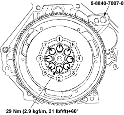
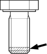
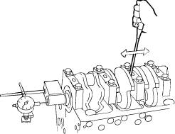

Special Tools Required
Stopper 5-8840-7007-0
- Lock the flywheel with the special tool and remove the fastening bolts.

- Apply Locktite to the top thread of the new fastening bolts.

- Install the flywheel and the fastening bolts then lock the flywheel with the stopper.
- Tighten the fastening bolts in numerical order as shown in the illustration.
NOTE: The installation time including the torque check is max. 10 min.
- Set the dial indicator as shown in the illustration and measure the crankshaft thrust clearance.

- If the thrust clearance exceeds the specified limit, replace the thrust bearing as a set.
Crankshaft end play:
Standard (New):
0.05 – 0.15 mm (0.002 – 0.006 in.)
Service Limit:
0.2 mm (0.008 in.)